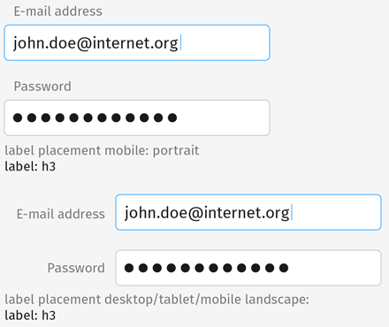

<div class="container">
	<div class="row">
		<div class="col-sm-12 col-md-12 col-lg-12">
			<h1>Forms</h1>
				<form><input type="text" class="textInput" name="firstName"></form>
				<br>
				<p class="longText"><strong>normal</strong></p>
				<p class="mrktplc-code">
					padding: 0px 10px;<br>
					background-color: #fff;<br>
					border: 1px solid #cbcbcb;<br>
					border-radius: 5px;<br>
					height: 40px;<br>
					width: 300px;<br>
					font-family: 'Fira Sans OT';<br>
					font-weight: normal;<br>
					font-size: 20px;</p>
				<br>
				<p class="longText"><strong>active & focus</strong></p>
				<p class="mktplc-code">
					border-color: #4cb1ff;</p>
					<br>
				<br>
				<br/>
				<br>
				<p class="longText">Text labels are to the left of the form field, unless viewed in mobile portrait. Then the label is placed above the field, aligned left.
				</p>
				<br>
				<br/>
				<br>
				<p class="longText">Form fields with icons and text use the same 10px padding rules as buttons with icons and text.
				</p>
				<br>
				<br/>
				<br>
				<p class="longText">Tooltips appear over dotted-line links.
				</p>
				<br>
		</div>
	</div>
	<!-- Pagination. If you have more than one page, set the multipage variable in the Frontmatter to true. Editing the pagination code happens in /_includes/homePagination.html.
		NOTE: This is currently broken in the Jekyll ver of this template.
		-->
		{% if page.multipage %}
			{% include homePagination.html %}
		{% endif %}
